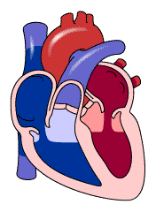
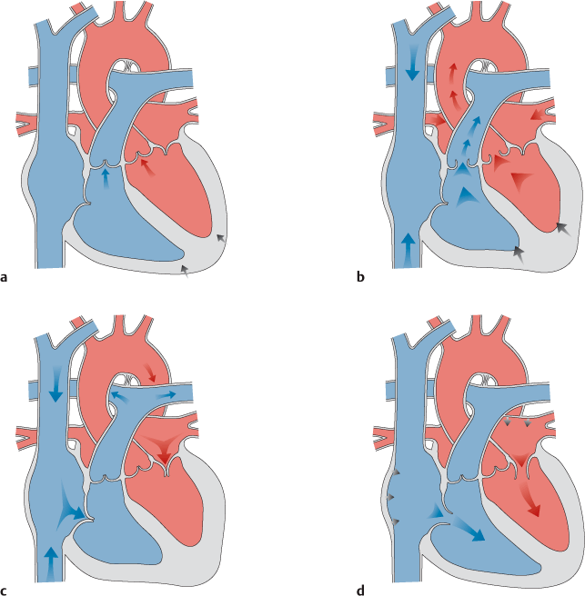
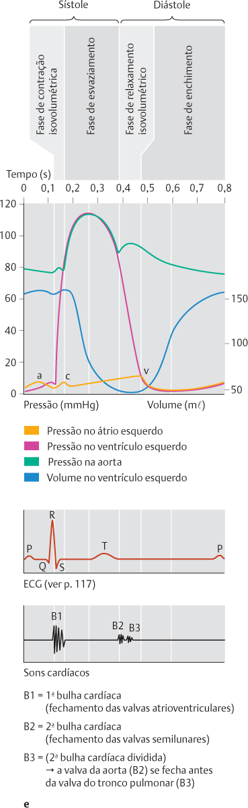

A contração do coração é conhecida como sístole e nela ocorre o esvaziamento dos átrios ou dos ventrículos.
O relaxamento do coração é conhecido como diástole e é nessa fase que os átrios recebem o sangue vindo do corpo ou dos pulmões e os ventrículos recebem sangue dos átrios.
A sístole ventricular força, então, a passagem de sangue para as artérias pulmonar e aorta, cujas valvas semilunares (três membranas em forma de meia lua) se abrem para permitir a passagem de sangue.

Fase de contração isovolumétrica (a): o miocárdio ventricular contrai-se e se estende em volta da coluna de sangue no ventrículo.
Todas as valvas estão fechadas: valvas atrioventriculares já fechadas (a pressão da câmara excede a pressão atrial), valvas arteriais ainda fechadas (a pressão da câmara é ainda menor do que a pressão intra-arterial).
A contração do miocárdio em volta da coluna de sangue produz uma vibração mecânica e, com isso, um som (som de contração), conhecido como 1ª bulha cardíaca. No entanto, é, na verdade, o fechamento da valva atrioventricular que causa a 1ª bulha cardíaca
Fase de esvaziamento (b): as valvas atrioventriculares permanecem fechadas e evitam o refluxo reverso de sangue ventricular para os átrios. A pressão intraventricular excede a pressão arterial; as valvas arteriais se abrem, o sangue flui para a aorta e o tronco pulmonal.

Fase de relaxamento isovolumétrico (c): o miocárdio ventricular relaxa.
Também nesta fase, todas as valvas estão fechadas: valvas atrioventriculares ainda fechadas, valvas arteriais já fechadas (evitam o refluxo de sangue que acabou de ser ejetado das artérias para o ventrículo).
O fechamento das valvas produz a 2ª bulha cardíaca. Ocasionalmente, as duas valvas arteriais se fecham temporariamente um pouco desviadas; fala-se, então, em 2ª bulha cardíaca desdobrada (e).
Fase de enchimento (d): a pressão intraventricular cai bruscamente, as valvas arteriais permanecem fechadas; as valvas atrioventriculares se abrem, o sangue entra nos ventrículos.
O fluxo sanguíneo segue, principalmente, pelo movimento do plano valvar, menos do que pela contração dos átrios: durante a sístole, o plano da válvula se move em direção ao ápice cardíaco; durante a diástole ele retorna rapidamente para a sua posição inicial e “se lança” sobre a coluna de sangue.
Observação: Tanto no período de contração quanto no período de relaxamento há fases em que todas as valvas estão fechadas. Não há fase de ação do coração em que todas as valvas estejam abertas!
Os sons cardíados são fenômenos acústicos fisiológicos do coração.
